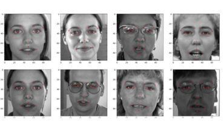
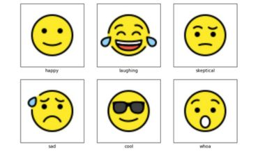

Facial Key points Detection
Facial keypoint detection plays a crucial role in computer vision and image analysis, offering valuable insights into facial features and expressions. The significance of facial keypoint detection lies in its ability to extract precise information about the location and orientation of specific facial landmarks. This information is then utilized in various applications, with a notable impact on emotion analysis and facial expression detection.
Image Compression using K-means
Image compression aims to reduce the size of image files while preserving the essential visual information. This process is essential for efficient storage, transmission, and sharing of images in various applications, such as web browsing, medical imaging and satellite data transmission.
The fundamental idea behind image compression is to represent the image in a more compact form without significant loss of quality.

Object Localisation
Object localization involves the task of identifying and determining the location of objects or specific regions within an image.
The primary goal is to develop a system that can accurately locate and delineate the boundaries of objects or areas of interest within the given images.
Object localization is a crucial aspect of computer vision, with applications ranging from autonomous vehicles and surveillance systems to medical imaging and augmented reality.
3D Quadrotor Controller
A 3D Quadrotor Controller and Trajectory Generation system represent a sophisticated blend of robotics and control engineering designed to navigate and control the motion of quadrotor aerial vehicles in three-dimensional space.
The primary objective of a 3D Quadrotor Controller is to stabilize and maneuver the quadrotor, ensuring precise control over its position and orientation through a given set of way points specified by the trajectory module.
Publications
Energy management via anomaly detection for manufacturing enterprises
This paper proposes an approach to optimize the energy consumption by detecting electrical and
operational anomalies of connected loads in the manufacturing unit via analyzing electrical
parameters collected through installed energy meters at load level. The gathered data is subjected
to anomaly detection techniques using machine learning. It presents an effective way to draw The
conclusions and economic recommendations from the analysis for the facility management.
Optimal battery charging forecasting algorithms for domestic applications and electric
vehicles by comprehending sustainable energy
The paper focuses on the development of forecasting algorithms for optimal battery charging in
domestic applications and electric vehicles, with a particular emphasis on incorporating sustainable
energy sources. The developed algorithm assists in scheduling the charging time of batteries by
choosing the lowest electricity price slots and thus resulting in economic savings to the customer. It
also includes an intelligent charge scheduling system that classifies PHEVs to be charged
according to the state of charge of the battery, time duration of parking, etc., and attributes
optimized time slots for charging these PHEVs.